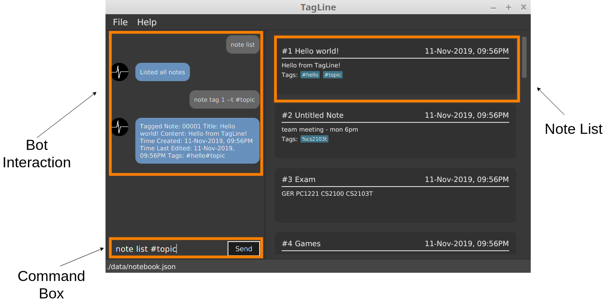
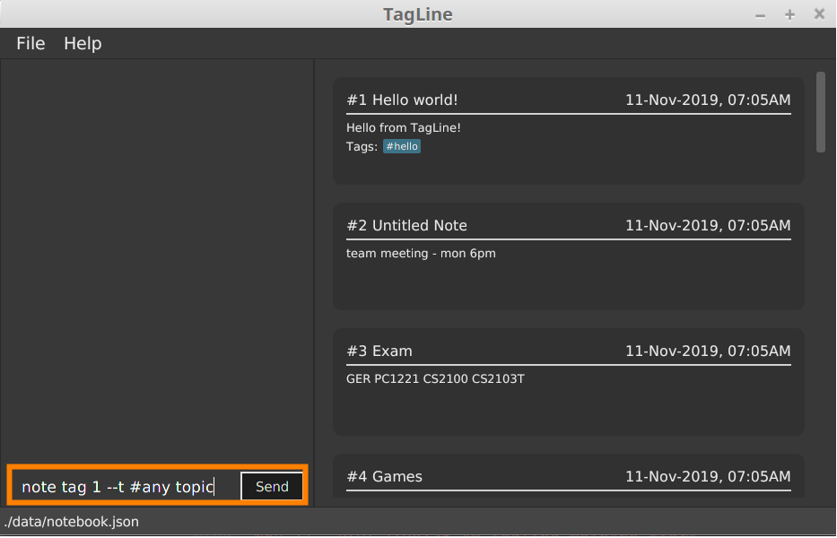
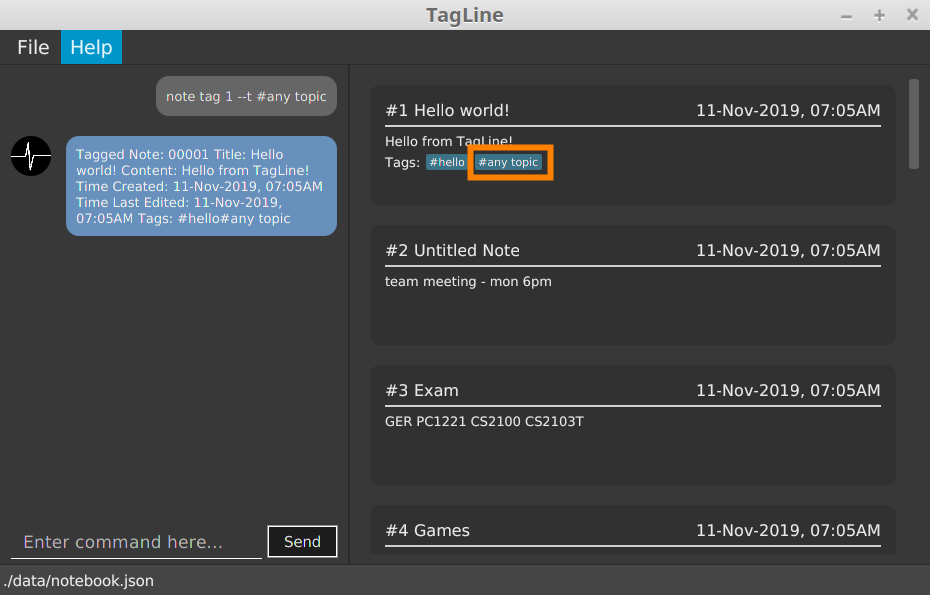

Overview
This portfolio is made to summarize my contribution in my CS2103T project.
My team, which consists of 5 CS students, was asked to develop an address book application as part of our project assignment.
After some discussion, we decided to morph the application into a note management app called as Tagline which utilizes several types of tags in order to helps its user in managing their notes efficiently.
Following are the screenshot of Tagline:

Summary of contributions
-
Major enhancement: I added
note tagandnote untagcommands in TagLine.-
What it does: This command allow user to tag its note with any of three types of tags in tagline.
-
Justification: This tagging feature along with the filtering
note listcommand will help its user to manage their notes efficiently.
-
-
Major enhancement: I implemented
Hash Tagmodel.-
What it does: Hash Tag is one of the three types of tags which helps its user to categorize their notes with topics.
-
-
Minor enhancement: I refactored
contact modelfrom address book-
What it does: Tagline has an address book integrated inside of it. Therefore, we decided to reuse some part of AB3. However, we need to do some minor tweak so that it suits our app well.
-
-
Code contributed: [RepoSense report]
-
Other contributions:
-
Project management:
-
Set up milestone and allocate issues.
-
Setup Netlify
-
-
Community:
-
Actively asked in forums and slack to clarify my doubts and others: #119
-
-
Contributions to the User Guide
Below are parts which I contributed to in the User Guide. |
Tag a note: tag
Tags a note with one or more tags.
Format:
note tag NOTE_ID [--t TAG]+
In Tagline, there are 3 types of tags. They are hash tag, contact tag and group tag.
Tag a note with a hash tag
Hash tag is a tag of the form #TOPIC where TOPIC could be substituted with any string not longer than 30
characters.
Example: #Assignment_1, #Project CS2103T, #Meeting Notes
By tagging a note with a hash tag, user can easily find all notes related to a certain topic.
Here is an example of tagging a note with a hash tag
-
Enter the command
note tag 1 --t #any topicinto the command box. -
Send the command and you will be able to see the tag in the note view.

Tag a note with all tags
We can also combine the three tags above in one note tag command.
Example:
-
note tag 00002 --t #CS2103T --t #Duke --t @12300 --t %cs2103TTags note with id '00002' with tag '#CS2103T', '#Duke' and user with id '@12300' and group '%cs2103T'.
Untag a note: untag
Untags a note from one or more tags.
Format:
note untag NOTE_ID [--t TAG]+
Similar with note tag command we can also untag a note with three types of tags.
Example:
-
note untag 00002 --t #CS2103T --t #Duke --t @12300 --t %cs2103TUntags '#CS2103T', '#Duke' and user with id '@12300' and group '%cs2103T' from note with id '00002'.
Contributions to the Developer Guide
Below are parts which I contributed to in the Developer Guide Guide. |
Tagging feature
Description
The user can tag a note with many tags by using note tag command.
Implementation
In order to add tagging feature we will need to take a look at two processes, which are the tag command creation and the execution of the command.
Creating Tag Command
We will use a TagParserUtil to create a tag from user input.
Given below is an example scenario when a user tag a note with 2 tags.
Step 1: The user command will be passed to TaglineParser, all the way to the TagNoteParser.

Step 2: NoteParserUtil will be used to create a noteId object.
Step 3: Finally, TagParserUtil will be used to create tag objects. All of them will be aggregated inside a
tagList before being passed to the TagNoteCommand Constructor.
This whole process has created a TagNoteCommand object from user input.
Executing Tag Command
Now, we will take a look on how we are executing the tagging command.
Given below is an example scenario when the tagging command gets executed.
Step 1: The TagNoteCommand interact with NoteManager through model to find the note to be tagged.

Step 2: The TagNoteCommand then exchange each tag with another tag which is registered inside the model.
Internally, model will have to interact with TagManager which will find the registered tag or register one if it does
not exist inside model.
Step 3: Finally, the note will be tagged with the registered tag using model.
This whole process has successfully executed the TagNoteCommand.
=== Tagging a note
-
Prerequisites: Enter
note listcommand to view all notes. Ensure that note with id1exists. Otherwise, take any other note or create one and replace all id1with the chosen note’s id in each of the following test cases. -
Tagging a note with hash tag.
-
Prerequisites: Note with id
1is not tagged with#any topic,#topic1,#topic2, and#topic3. -
Test case:
note tag 1 --t #any topic
Expected: Note successfully tagged with#any topicwhich should be reflected in the response message and in the note view. -
Test case: Enter
note tag 1 --t #any topictwice
Expected: The first time we enter the command, it should succeed normally as described in the previous test case whereas the second time we enter the same command, we would get an error message saying that the tag has been tagged to the note. -
Test case:
note tag 1 --t #topic1 --t #topic2 --t #topic3
Expected: Note successfully tagged with the three hash tag which should be reflected in the response message and in the note view. -
Test case: Enter
note tag 1 --t #topic1 --t #topic2then enternote tag 1 --t #topic1 --t #topic3
Expected: The first time we enter the command, it should succeed normally as described in the previous test case whereas the second time we enter the next command, we would get an error message saying that there are tags which have been tagged to the note. In this case, it is#topic1 -
Test case: Enter
note tag 1 --t #0123456789012345678901234567890
Expected: We will get an error message saying that the maximum character for hash tag is 30.
-
-
Tagging a note with all types of tag
-
Prerequisites: There is a contact with id
1, otherwise you may choose any other existing contact id. There is a group with nameBTS, otherwise you may create one. Note with id1is not tagged with#topic,@00001and%BTS. -
Test case:
note tag 1 --t #topic --t @00001 --t %BTS
Expected: Note successfully tagged with the three hash tag which should be reflected in the response message and in the note view.
-
Untagging a note
-
Prerequisites: Enter
note listcommand to view all notes. Ensure that note with id1exists. Otherwise, take any other note or create one and replace all id1with the chosen note’s id in each of the following test cases. -
Untagging a note with hash tag.
-
Prerequisites: Note with id
1is tagged with#any topic,#topic1,#topic2, and#topic3. -
Test case:
note untag 1 --t #any topic
Expected: Note successfully untagged with#any topicwhich should be reflected in the response message and in the note view. -
Test case: Enter
note untag 1 --t #any topictwice
Expected: The first time we enter the command, it should succeed normally as described in the previous test case whereas the second time we enter the same command, we would get an error message saying that the tag is not tagged to the note. -
Test case:
note untag 1 --t #topic1 --t #topic2 --t #topic3
Expected: Note successfully untagged with the three hash tag which should be reflected in the response message and in the note view. -
Test case: Enter
note untag 1 --t #topic1 --t #topic2then enternote tag 1 --t #topic1 --t #topic3
Expected: The first time we enter the command, it should succeed normally as described in the previous test case whereas the second time we enter the next command, we would get an error message saying that there are tags which are not tagged to the note. In this case, it is#topic1 -
Test case: Enter
note untag 1 --t #0123456789012345678901234567890
Expected: We will get an error message saying that the maximum character for hash tag is 30.
-
-
Untagging a note with all types of tag
-
Prerequisites: There is a contact with id
1, otherwise you may choose any other existing contact id. There is a group with nameBTS, otherwise you may create one. Note with id1is tagged with#topic,@00001and%BTS. -
Test case:
note untag 1 --t #topic --t @00001 --t %BTS
Expected: Note successfully untagged with the three hash tag which should be reflected in the response message and in the note view.
-